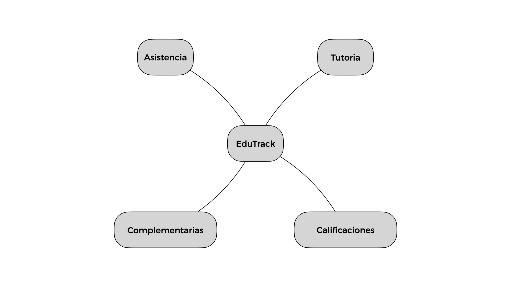

EduTrack es un sistema propuesto para el Instituto Tecnologico Superior del Occidente del Estado de Hidalgo (ITSOEH) diseñado para gestionar de manera eficiente 4 procesos educativos fundamentaleslas: asistencia, calificaciones, actividades complementarias y tutoria.
Problemática del proyecto
La problemática a resolver es la falta de registros completos de los procesos de asistencia, calificaciones, actividades complementarias y tutoría en las seis licenciaturas del instituto, lo que imposibilita el seguimiento adecuado de estas tareas. Como resultado, esto dificulta trazar una ruta de mejora educativa. La falta de datos precisos impide evaluar el estado actual de estos procesos y, por ende, obstaculiza la implementación de estrategias efectivas de mejora.
Objetivo del proyecto
Sistematizar los procesos de asistencia, calificaciones, actividades complementarias y tutoría mediante el desarrollo de una plataforma digital integrada, con el fin de optimizar el seguimiento y evaluación de estas tareas, facilitando la toma de decisiones para la mejora educativa en las seis licenciaturas del Instituto Tecnológico Superior del Occidente del Estado de Hidalgo (ITSOEH).
Subsistemas del proyecto
El sistema se fragmento utilizando la estrategia de "divide y venceras", la cual busca encontrar unidades de desarrollo lo bastante concisas que permitan ser desarrolladas de manera independiente pero que al mismo tiempo sean facil de acoplar al sistema completo.
